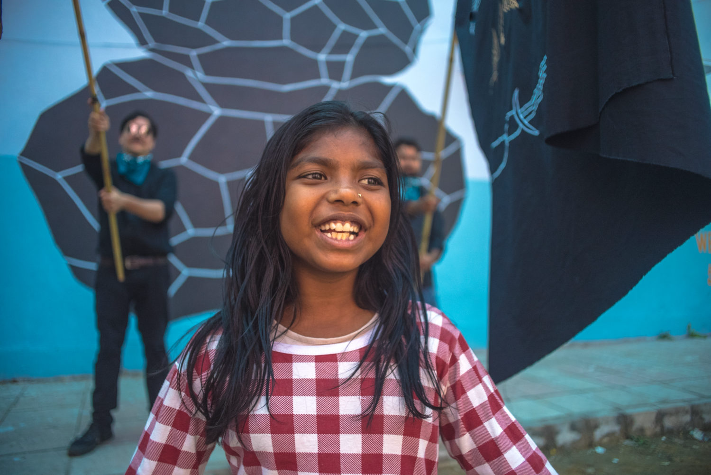
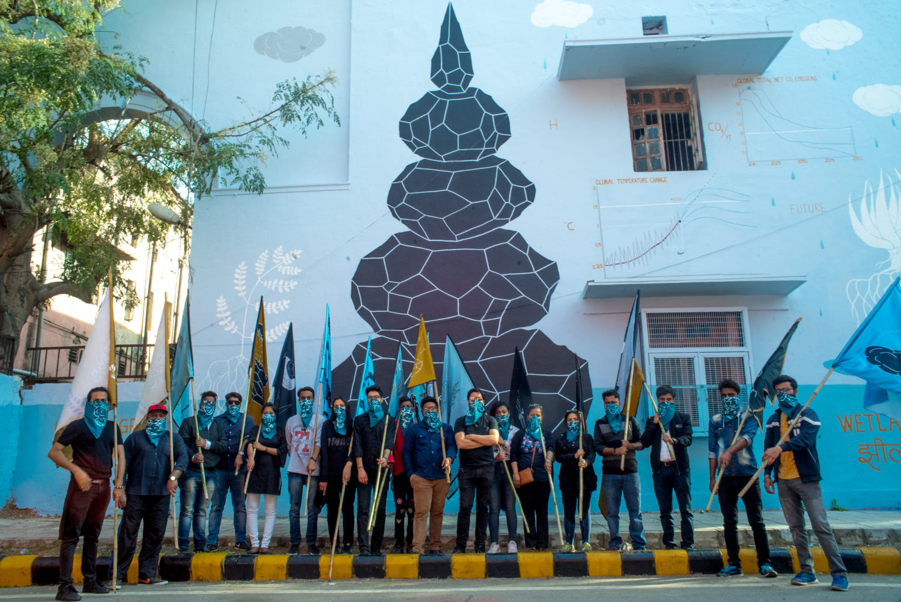
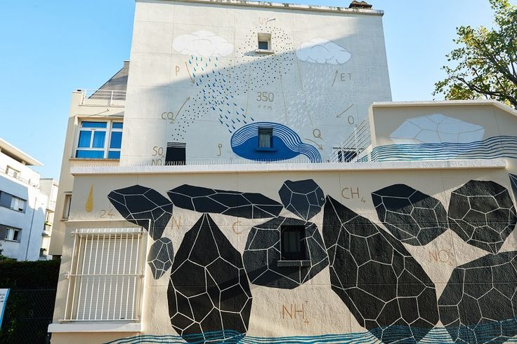
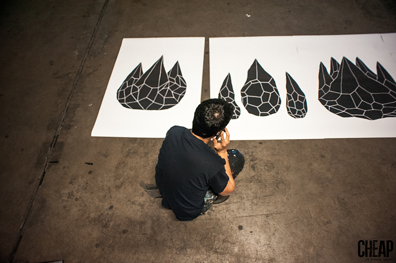
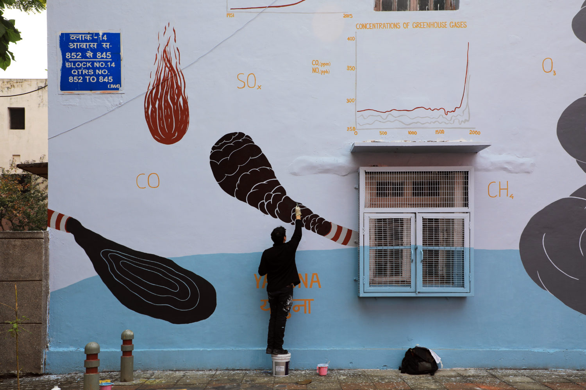
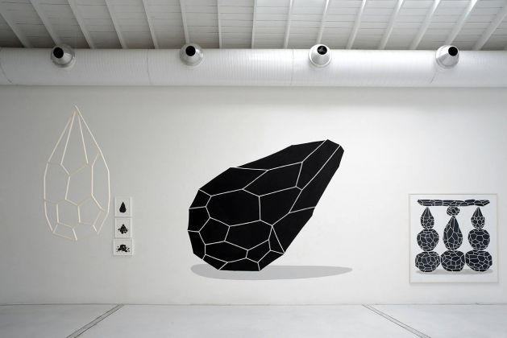
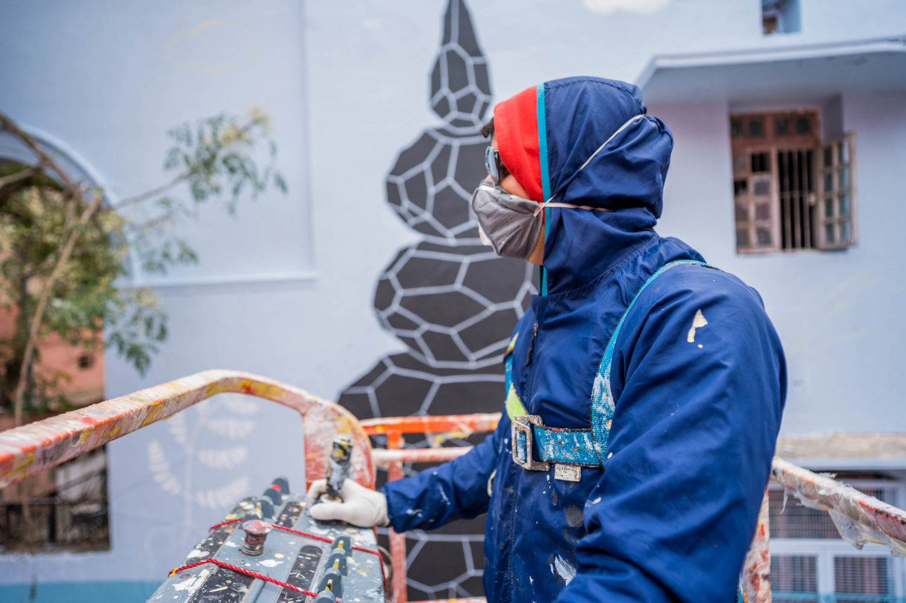
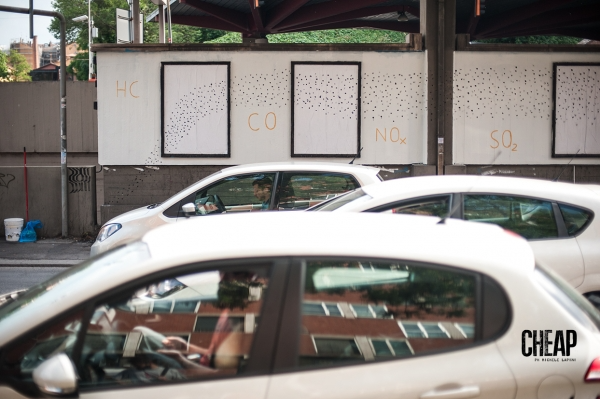
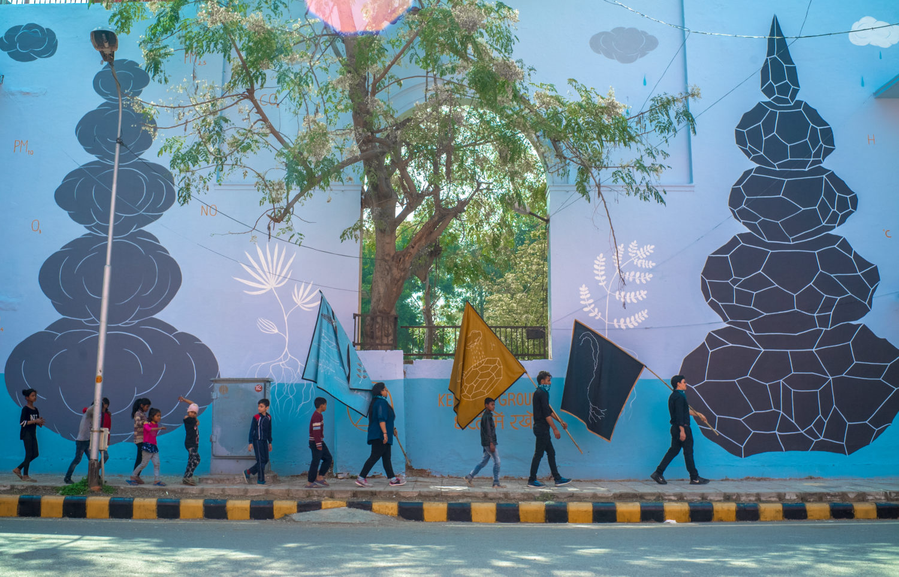
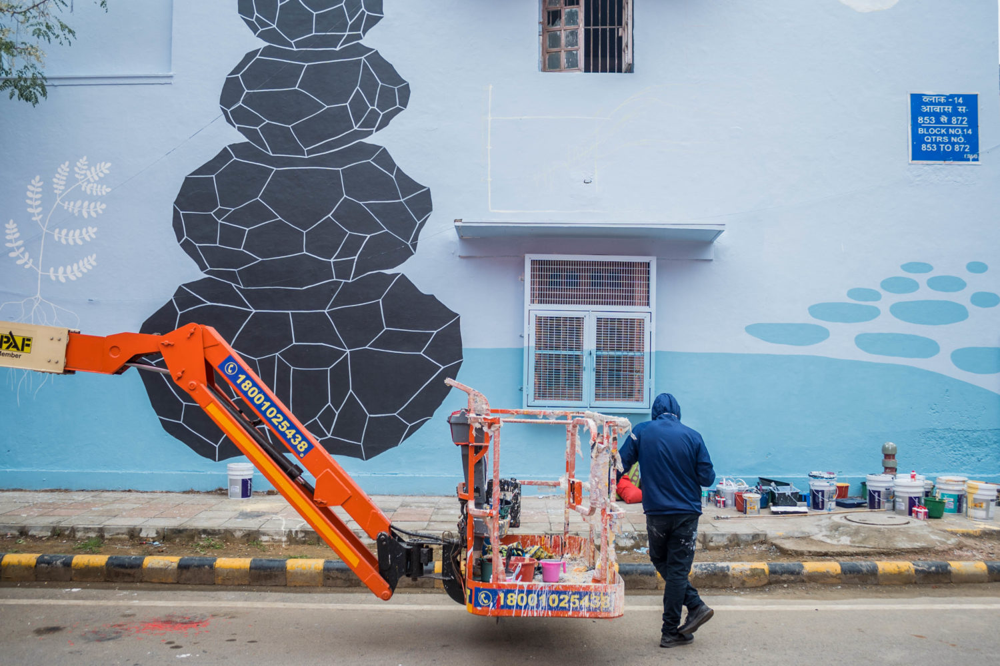
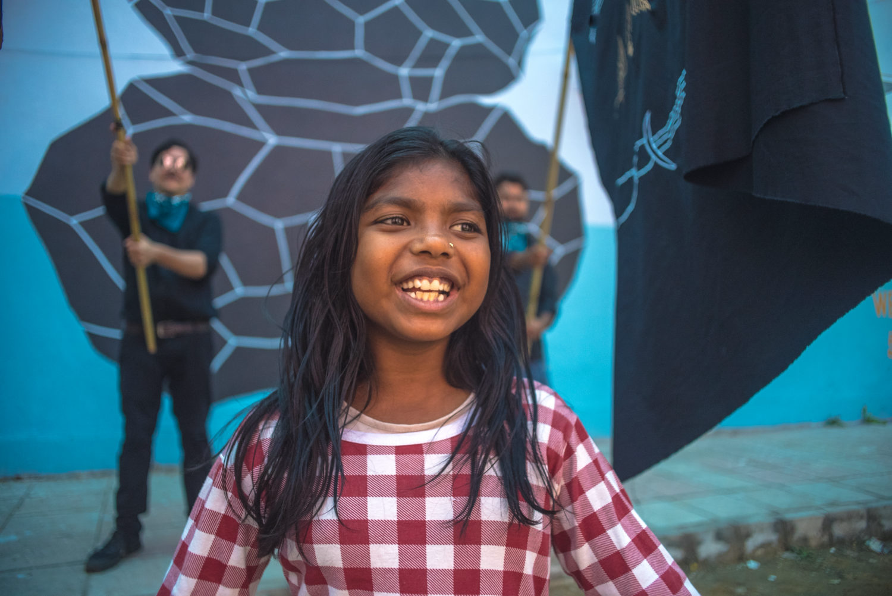
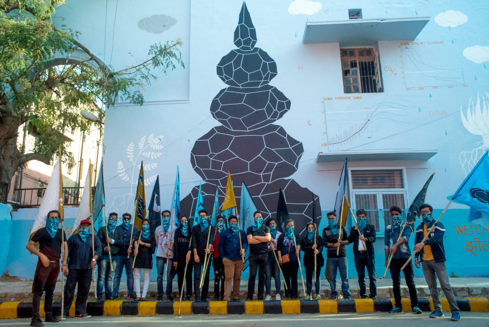
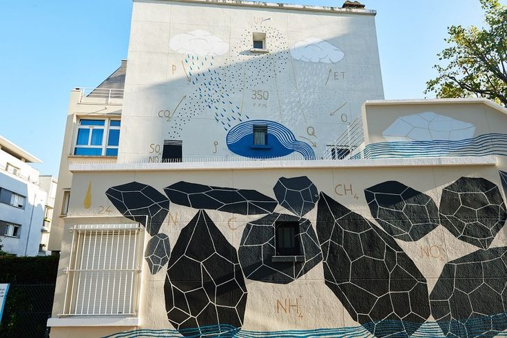
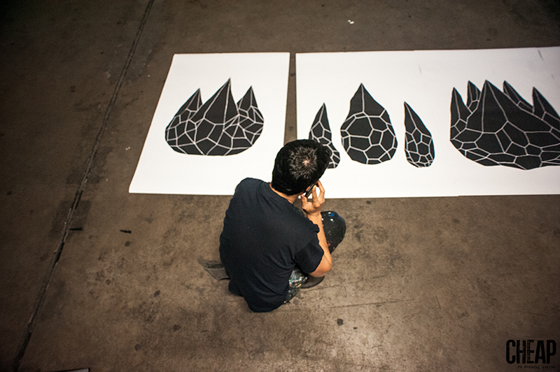
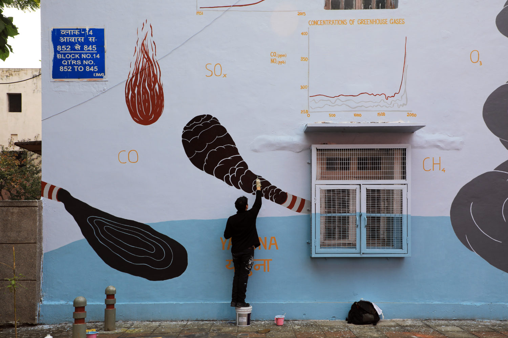
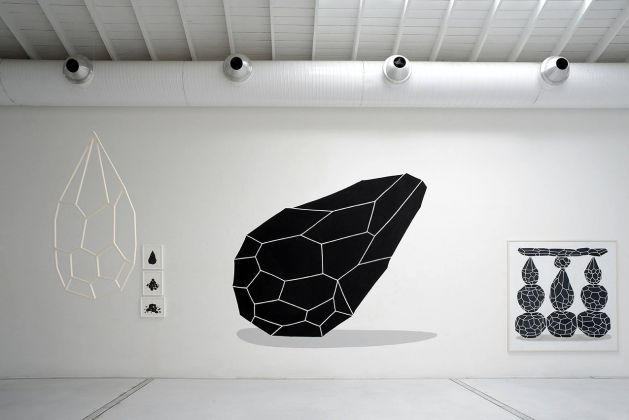
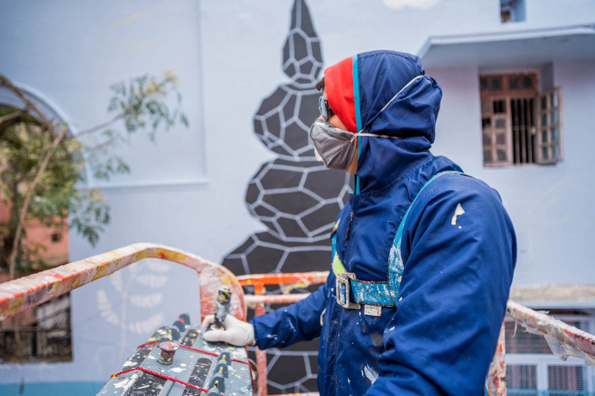
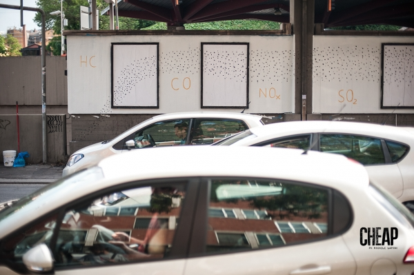
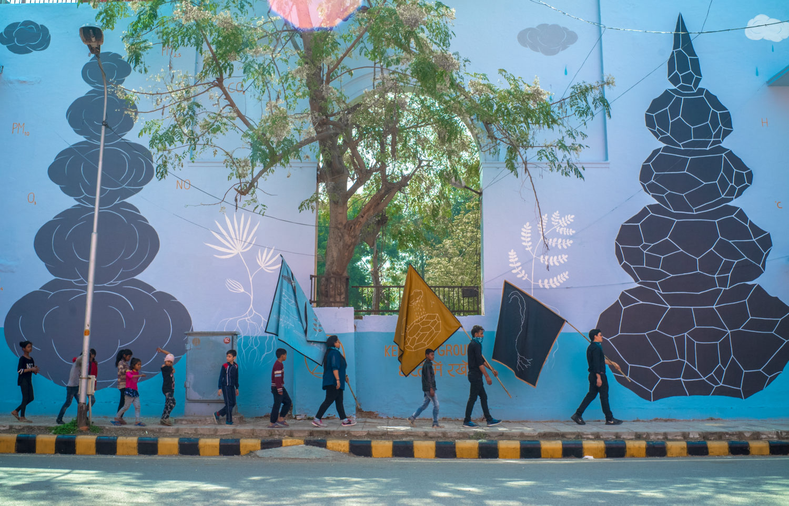
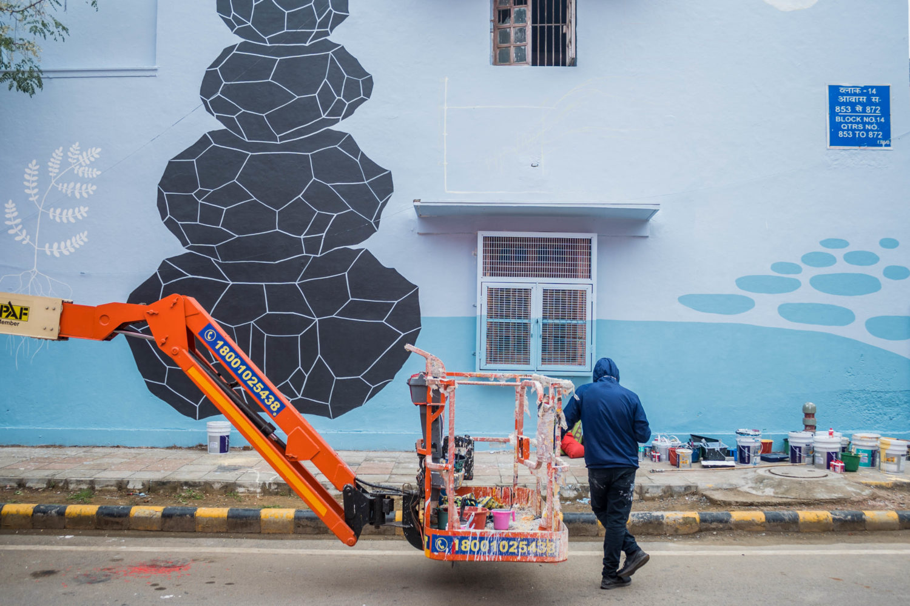
Andreco has created a site-specific artwork, with clear references to the cars emissions, with the heating systems one of the main causes of pollution in cities. The artwork is on the wall of the Bologna city Bus Station, in one of the most vehicular congested areas of the urban area. Emissions – this is the title – is the second phase of Climate, the macro traveling project on climate changes Andreco inaugurated in Paris in conjunction with COP21, the last UN conference on this topic. The work in Bologna had been realized for the “Cheap Festival” and include both wall surface and disuse billboards. Conceived with a narrative development that proceeds by symbols, the work evolves on two thematic strands that intersect one another, recognizable in the double combination surface / technical: not only hand painting on the wall but also posters posted on billboards. The mural should be read starting from the corner between viale Masini and Via Capo di Lucca going towards the train station. On the first two blocks of the wall, framed by the pillars of the shelter, the artist realized an upward nebula that refers to the pollutants in the exhaust gases from vehicular traffic. In the third block, the focus is instead set on the pollutants that generate the greenhouse effect. Successively, the focus shifts on pollution in the water cycle. In the following blocks, there are functions that concerns the percentage of CO2 in the atmosphere: the curves show in a symbolic way the recommended limit for reducing climate change of 350 ppm (parts per million) of CO2. On the right other functions refer to the raising temperatures. These functions become almost abstract signs and by them originates a branch that takes progressively fire: the consequences of climate change are illustrated as floods on one side and fire on the other one. Going ahead the painting on the wall are a alternated to the posters, the first of which expands the exhaust gas cloud that originates from the base of the wall. This thickening process increase more and more billboard after billboard: from fine dust (PM10) scattered into the air to their precipitation on earth, till the monolith until it gets to the mountain and gradually end in a completely black poster. With this mural Andreco once again deals with and depicts the relationship between man and nature, and referring to the recent research on environmental sustainability and climate changes, keep making, with a never expected and subtle language, an intense criticism about anthropogenic pollution generated by of the use of fossil fuels.